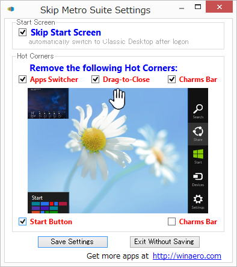

| TOP | weblog | TIPS | Works | リンク | 掲示板 |
| 2012-12-13 Windows8 普通に使ってます (1)Windows8は「買い」か？ (2)メトロ (3)遭遇した問題点 (4)６４bit版のCUBASEについて浅知恵 (5)Winsows8 Media Center のレジストメールが来ない、腹立つ！ (6)ド新品のHDDにWindows8Pro アップグレード版はクリーンインストールできるのか？ (1) Windows8 Pro使てます。 lenovo ThinPad E520 、プリインストールのWindows7 Pro 32bit版、スペックは CPU： Intel Celeron B810、メモリは２ＧＢ、ハイパースレッティングはサポートしてないけど「SSandy Bridge」アーキテクチャというやつです。i 購入価格 ￥２６,０００ に ３年延長保証つけて￥３１,０００です。（安っ！） こいつにメモリを４ＧＢを￥１,９８０(やすっ)で追加して合計６ＧＢにしてWindows8 Proアップグレード版をアマゾンで購入して使ってます。
Windows7 32bit版の時は「FREEMAKE」の動画変換とかは相当遅かったし、動画編集とかは途中で固まった的な動きで、やっぱりCeleronでは厳しいなあといった感じ。 特に重い処理を行あった後はアイコン化されているプロセスのメモリが全部スワップアウトしているのでしょうか？アクティブになるまでがチョー遅く、また、アプリ起動もムカツク遅さでしょっちゅう電源オフ・オンしていました。 Windows8ではこんなプアなマシンでもムカツクことなくスカスカ動作します。 まあ、これはWindows8より６４OSとメモリ増設による恩恵でしょう。 ですが、今までのOSと明らかに違うのはインストールの短さと起動、シャットダウンが相当早くなったことです。 上のビデオでの実測結果。
この様に電源ONから実質的にアプリが利用できるまでの時間はおおよそ１分です。 1分ではサービスは完全に起動しきっておらず多少重く感じますがブラウザなら問題ないレスポンスで動作します。 以下はlenovoのシャットダウンと電源オンからGoogle Chromeが起動するまでのビデオです。 全然関係ないけどNexsus7で撮影してGoogleドライブで取り込みました、USBで接続すりゃすむ話なのにね。 かつてない低価格でマイクロソフト製品としては、それなりに良さが実感できるのでメモリ増設っして６４bit版を選べるなら「買い」でしょう。 -戻る- (2) めだまの「Metoro」ですが、ほとんど使っていません。 従来からのディスクトップアプリを使うユーザーには全く不要のインターフェイスです。 主要な拡張子がメトロアプリ（？）に関連つけられていますが、ことごとくディスクトップのアプリに変更です。 Windows8の使いにくさの回避、便利にするたにインストールしたフリーソフトは以下の３つです。 Classic Shell Windows8には「スタートボタン」がありません。 プログラムの起動はメトロの「検索」かディスクトップに張り付けたショートカットになります。 「検索」はそれなりに優秀ですがやはりメンドクサイです。 このアプリを入れるとWindowsXP、７、カスタムのいずれかのデザインのメニューを選ぶことができます。 その他にもやたら沢山の設定があります。 Skip Metro Suite こいつはいたってシンプル、下のスクリーンショットだけの機能です。  -戻る- （3） 僕の場合はWindowsXP 32bit → Windows7Pro 64bit → Windows８Pro 64bit とOSをバージョンアップしたため、64OSで動作しないアプリはWindows7時代にふるい落とされました。 でも、動作しなかったアプリはほとんどなかったとはずで、あったとしても代替えのアプリがあるということです。 Windows8でも問題点はweblogでも書いたんですけどWindows7の６４デバイスドライバがインストール出来ない時があることです。 (参考)「64bit Windows8専用ドライバじゃないとインストール出来ない仕掛け」です。 まともなメーカーでWindows8が発売される前で、比較的新しい周辺機器のデバイスドライバソフトウェアはWDFタイプで書かれているものがありますが、Windows8のデジタル署名とか入ってなかったりで、インストールできません。 手持ちの周辺機器や購入予定の危機はできればメーカーのサポートに電話で確認したほうがよいでしょう。 ウェブの更新はどうしても遅れがちだし、たまに間違いがありますからね。 -戻る- （4） CUBASE7が発売されたそうで。 CUBASEはVer.5から64bit版がリリースされているようですね。 オーダーメードPCショップの社員？の「JUNSビルダー 山中潤のPC日記」でWindow Vista 64bitでCUBASE5 64bitを動かしてVST Pluginが動作するかテストをしています。 実験結果は「ほぼ問題なし」としています。 VSTがDLLで提供されていることも触れていて64bit版のCUBASEで動作確認するために重要な要素としてとらえているようですね。その点については技術的な事は書かれていませんけど。 解説しますとCPUのワードサイズが上がるとレジスタとかアドレッシングモードとかプラスアルファで新しい命令セットが追加されたりします。 ですのでコンパイラもそれに合わせたコンパイルをしなきゃいけません。 （余談ですが「一般的なDLL」は単体で起動できないだけで、EXEとほぼ同じと考えてください。） Microsoft主要ベンダーで発売しているコンパイラでは４biitのアプリ（がコンパイルされたexe）から３２bitぼDLLは直接呼べないんです。 MicrosofはOSのt移行を進めるため「WOW=Windows On Windows」と言うサブシステムを用意しています。 ３２OSで１６のアプリを動かすための「WOW」、６４のOSで３２のアプリを動かす「WOW６４」ですね。 記事ではSONARの64bitもテストしていてVSTの実装方法の違いを指摘しています。 面倒なので本文丸写しします、反論あるけどね。 タスクマネージャーをみるとCUBASE5 はPlugInをいくつ入れてもタスクは変わらないのにSONAR8 では32bitPlugInを入れるたびタスクが一つずつ増えてゆく。 これは単純に考えればCUBASEは32bitVSTのエミュレートを自前で行っているのに対しSONARはWindows標準のWOW64を使用して32bitVSTのエミュレートを行っているということだ。 SONARの32bitVSTをタスクとして切り離すという方法は若干効率が下がったとしてもReWireの様にDAWとPlugInが別のプログラムとして動いているため(詳しくはわからないが)もし32bitPlugInに問題が生じてもホストであるSONARや他のPlugInへの影響を抑えられる。 また独立したプログラムとして動いていれば32bitPlugInであってもそれぞれ4Gbyteまでメモリを使える。 32bitOSでは複数立ち上げれば一つのアプリは1Gbyte程度もメモリを使えなかったのだから64bitOS+大容量メモリというのは必ずしも64bitネイティブでなくても恩恵を得られるということだSONAR8のやり方は少なくとも64bitWindowsを使うには効果が大きい。 もし32bitPluInが各3Gbyteずつメモリを確保できるなら、今までと全く違う形の音楽制作が見えてくる。 ■結論■ 64bit DAW は挑戦してみるだけの価値がある。 この記事で一番ダメなのは64のCUBASEがどうやって３２のVSTをホストしているのか？を明らかにしないまま「SONARはVSTをWOW６４で動かしているからそのほうが有利」としていること。 本来ならこういった点を調査するなら、同じプラグインを使った同じ曲を録音、再生、トラックダウン（知らないのでテキトー）を実施してスレッド数の変動とか、とCPU使用率、メモリの変動を見ないとダメなんですね。 ということで、この記事の評価は鵜呑みにしないほうがよいような気がします。 ６４のCUBASEについてはこのページしか見ていないので、もう少し調査しないといけないなのですけど、いかんせん使った事のないソフトウェアを想像で話しているので、正確性は自分でも疑問です。 話は変わりますがスタインバーグの「Cubase 7 / Cubase Artist 7 ― 既知の問題と、仕様についてのご注意事項」「Cubase 7 / Cubase Artist 7 のインストールに関する追加次項」にヘビー問題点が書いてあって素人から見ると「ベータ版じゃね？」って思うんですけど... 大昔はね、Windows3.1で動かしてた１６アプリ３２のCコンパイラ書いた３２のDLLを呼び出すことが「正式に」出来たんです、「サンク」とか「サンキング」とかい呼ばれてて実業務でも結構使ってました。 -戻る- (5) DVDのRead/WriteをサポートしているVista以降のWidowsですがMPEG2のコーデックが入っていないのでDVD-Videoが見れません。 コーデック内臓のフリーソフトを入れればいい話なんですけど。 Windows8では本来有償の「Medeia Center」の機能がら２０１３年１３１日まで無償で提供されます。 下のページでメールアドレスを入力すると７２時間以内にレジストコードが送られえてくるはずなんですが９６時間経過しましたけどまだ送られてきません。 http://windows.microsoft.com/ja-JP/windows-8/feature-packs -戻る- (6) 僕はメディア版の「Microsof Windows8Pro アップグレード用」を２セットアマゾンで購入し、これまで４回インストールしました、６４OSです。 ２つのライセンスキーのうち１つはファイルサーバー的に利用しているPCなので１回だけインストールして、３webl回は同じPC(lenovo)で２台のHDDにインストールしました。 インストールのパターンは、 （１）ど新品のHDDにWindows８ Enterprise体験版インストール→DVDブート、パーテション切り直し後インスト （２）プリインスト３２のWindows7ProのHDD→DVDブート、パーテション切り直し後インスト （３）DSP版６４のWindows７ProのHDD→→DVDブート、パーテション切り直し後インスト （１）は本来インストールできないはずですが、インストは可能でライセンス認証できています。 久しぶりに「DOS/V POWER REPORT」を購入したのですが、その中の記事の「Windows8インストール方法を再チェック」（ｐ２８）でパッケージ（DVDで売ってるやつ、すなわち僕がもってるやつの事）とダウンロード版では新規インストールはできない、「ライセンス認証 プロダクトID：使用不可」になると書いてます。 下のブログの一回目の事でしょうな。 Windows 8 Pro アップグレード版で新しいHDDにクリーンインストール (18) ブログではこの記事でもド新品のHDDからではないものの２回目クリーンインストールで認証できてます。 週刊アスキーの「Windows8アップグレード版でクリーンインストールは可能!?」ではクリーンインストールでて認証もできています。 MSにも確認していて「32ビット版のWindows7などから64ビット版のWindows8にアップグレードする場合、クリーンインストールができる（必然的にそうなる）」とのことでした。 WindowsXPからのインストールもそうなるらしいです。 結局、またはっきりしませんでしたがパッケージのDVDからのクリーンインストール「たぶん出来る」にしときます。 ダウンロード版のISOから作成したDVDは一切さわっていないので全く分からないことをお断りしておきます。 -戻る- |